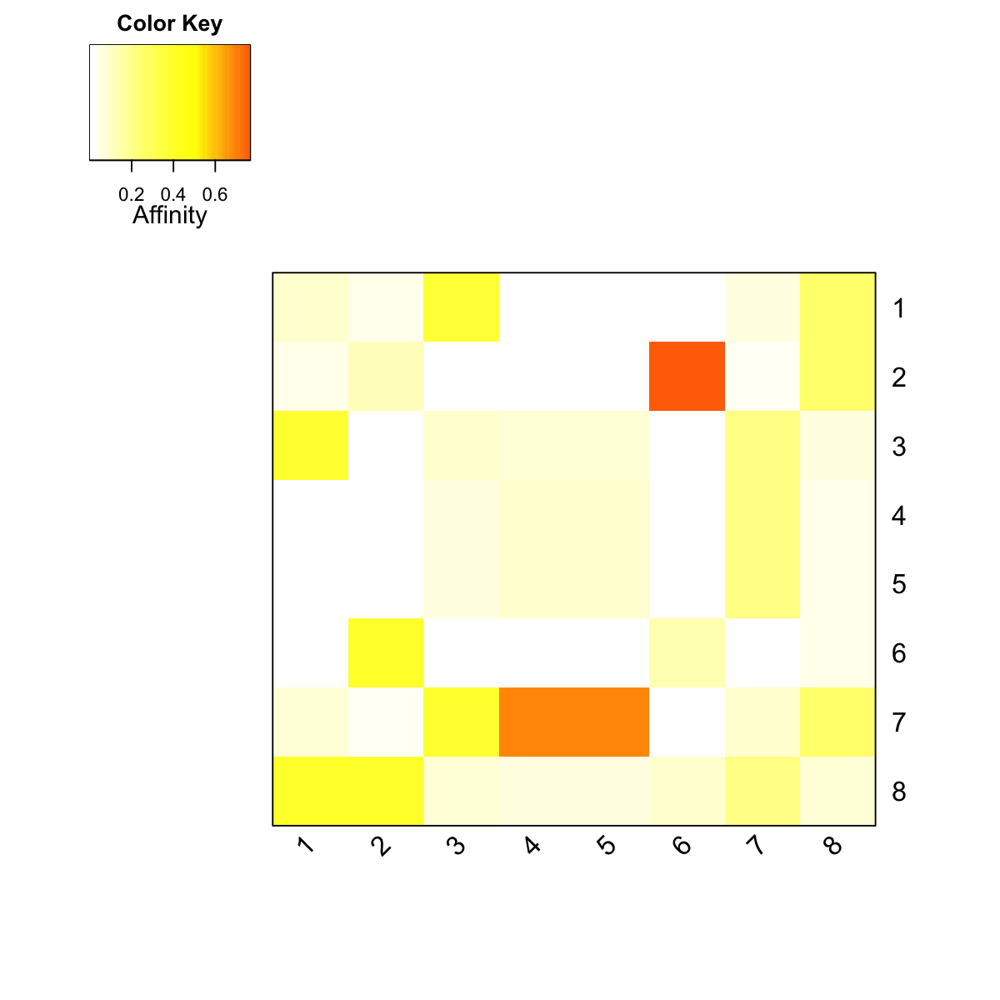

dRWRdating is supposed to estmate sample
relationships from the given gene-sample matrix and graph
according to random walk restart (RWR) dating based method.
The method includes: 1) RWR in the graph using the input
matrix as seeds; 2) calculation of dating based contact
strength (inner products of RWR-smooth columns of intput
matrix); 3) estimation of the contact signficance by a
randomalisation procedure.
dRWRdating(data, g, normalise = c("laplacian", "row", "column", "none"), restart = 0.5,
normalise.affinity.matrix = c("none", "quantile"), num.permutation = 10, p.adjust.method = c("BH",
"BY", "bonferroni", "holm", "hochberg", "hommel"), adjp.cutoff = 0.05, verbose = T)
an object of class "dContact", a list with following components:
zscore: a symmetric
matrix storing zscore between pairwise samples
pval: a symmetric matrix storing pvalue
between pairwise samples adjpval: a symmetric
matrix storing adjusted pvalue between pairwise samples
cgraph: the constructed contact graph (as a
'igraph' object) under the cutoff of adjusted value
call: the call that produced this result none
# 1) generate a random graph according to the ER model g <- erdos.renyi.game(100, 1/100) # 2) produce the induced subgraph only based on the nodes in query subg <- dNetInduce(g, V(g), knn=0) V(subg)$name <- 1:vcount(subg) # 3) obtain the pre-computated affinity matrix PTmatrix <- dRWR(subg, normalise="laplacian", restart=0.75)Start at 2014-05-02 18:29:42 First, get the adjacency matrix of the input graph (2014-05-02 18:29:42) ... Then, normalise the adjacency matrix using laplacian normalisation (2014-05-02 18:29:42) ... Third, RWR of 8 sets of seeds using 7.5e-01 restart probability (2014-05-02 18:29:42) ... Using the seed set 1 (2014-05-02 18:29:42) ... Using the seed set 2 (2014-05-02 18:29:42) ... Using the seed set 3 (2014-05-02 18:29:42) ... Using the seed set 4 (2014-05-02 18:29:42) ... Using the seed set 5 (2014-05-02 18:29:42) ... Using the seed set 6 (2014-05-02 18:29:42) ... Using the seed set 7 (2014-05-02 18:29:42) ... Using the seed set 8 (2014-05-02 18:29:42) ... Finally, output 8 by 8 affinity matrix normalised by none (2014-05-02 18:29:42) ... Finish at 2014-05-02 18:29:42 Runtime in total is: 0 secs# visualise affinity matrix visHeatmapAdv(PTmatrix, Rowv=FALSE, Colv=FALSE, colormap="wyr", KeyValueName="Affinity")# 3) obtain affinity matrix given sets of seeds # define sets of seeds as data # each seed with equal weight (i.e. all non-zero entries are '1') aSeeds <- c(1,0,1,0,1) bSeeds <- c(0,0,1,0,1) data <- data.frame(aSeeds,bSeeds) rownames(data) <- 1:5 # calcualte their two contact graph dContact <- dRWRdating(data=data, g=subg)Start at 2014-05-02 18:29:43 First, RWR on input graph (8 nodes and 8 edges) using input matrix (5 rows and 2 columns) as seeds (2014-05-02 18:29:43)... Second, calculate dating-based contact strength (2014-05-02 18:29:43)... Third, generate the distribution of contact strength using 10 permutations on nodes (2014-05-02 18:29:43)... 1 out of 10 (2014-05-02 18:29:43) 2 out of 10 (2014-05-02 18:29:43) 3 out of 10 (2014-05-02 18:29:43) 4 out of 10 (2014-05-02 18:29:44) 5 out of 10 (2014-05-02 18:29:44) 6 out of 10 (2014-05-02 18:29:44) 7 out of 10 (2014-05-02 18:29:44) 8 out of 10 (2014-05-02 18:29:45) 9 out of 10 (2014-05-02 18:29:45) 10 out of 10 (2014-05-02 18:29:45) Last, estimate the significance of contact strength: zscore, pvalue, and BH adjusted-pvalue (2014-05-02 18:29:45)... Also, construct the contact graph under the cutoff 5.0e-02 of adjusted-pvalue (2014-05-02 18:29:45)... Finish at 2014-05-02 18:29:45 Runtime in total is: 2 secsdContact$zscore aSeeds bSeeds aSeeds 1.0694974 0.72769760 bSeeds 0.7276976 -0.00342653 $pval aSeeds bSeeds aSeeds 0.0 0.3 bSeeds 0.3 0.3 $adjpval aSeeds bSeeds aSeeds 0.0 0.3 bSeeds 0.3 0.3 $cgraph IGRAPH UN-- 2 0 -- + attr: name (v/c) $call dRWRdating(data = data, g = subg) $method [1] "dnet" attr(,"class") [1] "dContact"
dRWR
Fang H, Gough J. (2014) dnet: an open-source R package for integrative analysis of digitised data in terms of network, ontology and evolution. http://dnet.r-forge.r-project.org
){kind=link}